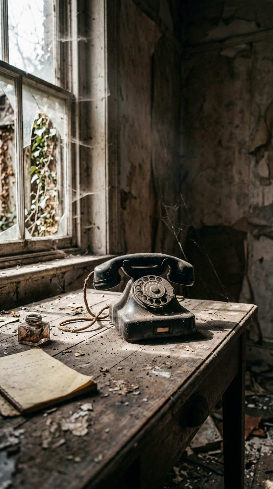
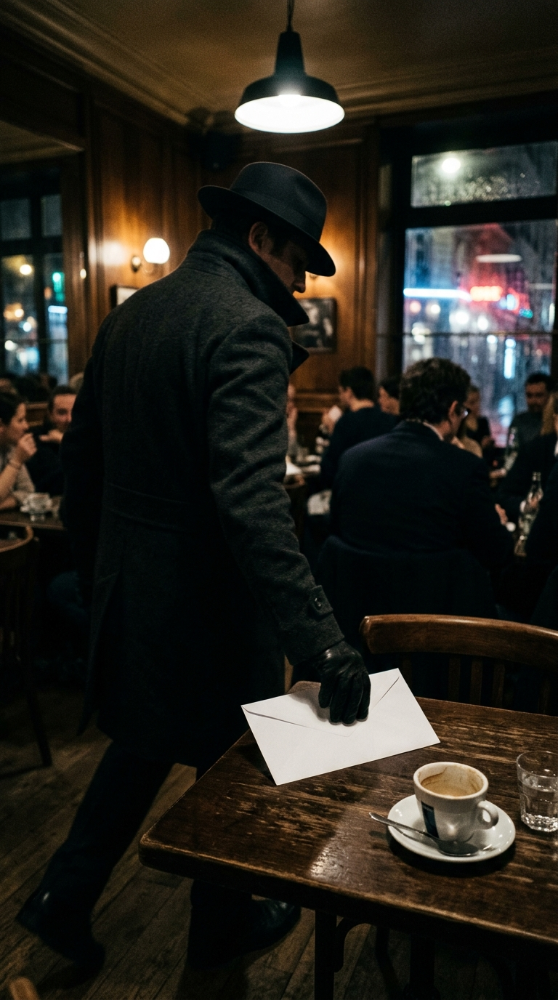
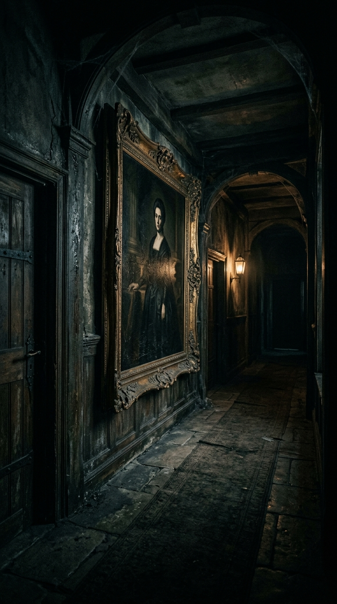
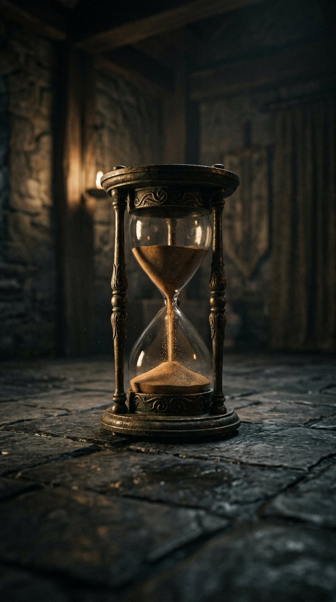
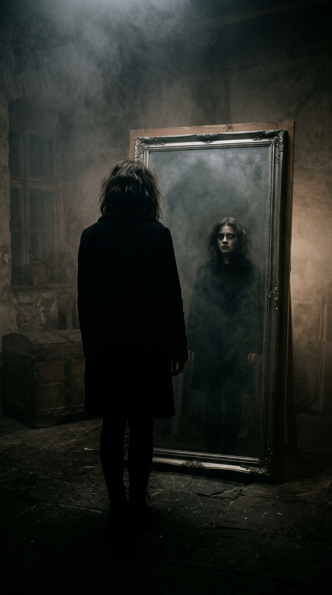
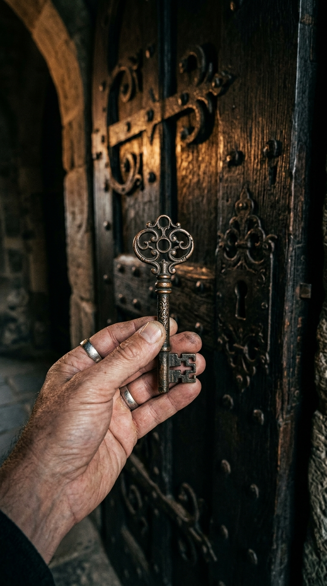

Relatos de la Verdad
Historias crudas, dilemas morales y verdades que salen a la luz.
El Precio del Silencio

La señora Elena, encargada del servicio en la inmensa mansión de los Valeriano, conocía cada rincón de la casa, pero sobre todo, conocía sus secretos más oscuros. Durante años, mientras limpiaba el polvo de las estanterías de la biblioteca, fue testigo de cómo su empleadora ocultaba sobres llenos de dinero en el doble fondo de un mueble antiguo, fruto de negocios ilícitos y conspiraciones que desangraban a empresas locales. Elena vivía en una constante tensión; el miedo a ser despedida luchaba contra su creciente náusea moral al ver la soberbia con la que la familia aparentaba una rectitud que no poseía. Guardar ese secreto se convirtió en una carga insoportable, una cadena que la ataba a una lealtad mal entendida hacia quienes no merecían ni un gramo de su respeto. Cada noche, al llegar a su pequeña habitación, se preguntaba si su silencio la hacía tan culpable como los dueños de la casa, o si, en realidad, estaba atrapada en un juego de poder donde el único premio era la supervivencia diaria. La pregunta no era solo qué haría con el dinero, sino hasta cuándo podría soportar la mirada de sus propios hijos sin sentirse una cómplice del mal.
La Herencia Oculta

Cuando el abogado leyó el testamento frente a la familia, todos esperaban cifras astronómicas y propiedades en la costa. Sin embargo, cuando el nombre del hijo menor fue pronunciado, lo único que le entregaron fue un sobre lacrado con una dirección en una ciudad olvidada, casi borrada del mapa. Al llegar a aquel lugar, una casa desvencijada, no encontró lingotes de oro, sino una vieja libreta de apuntes que documentaba minuciosamente el sufrimiento de decenas de personas a las que su padre había arruinado a sangre fría para construir su imperio. Cada página era una confesión, un mapa de la codicia que había forjado la fortuna que él había disfrutado sin sospechar nada. Entendió, con el corazón roto, que la verdadera herencia que su padre le dejaba no era el dinero, sino la deuda moral de reparar cada vida destruida. Aquel joven se encontraba ahora ante el abismo: ¿podría vivir el resto de su vida con el peso de los pecados de su progenitor, o tendría que renunciar a todo lo que conocía para buscar una redención que quizás nunca llegaría a completar del todo?
La Última Llamada

Era medianoche en un pueblo sumido en la quietud cuando el teléfono de la casa abandonada de Julián, desconectado desde hace años, comenzó a emitir un tono persistente y agónico. Julián, que vivía atormentado por la soledad, contestó casi por instinto, sintiendo cómo el frío le subía por los brazos. Al otro lado de la línea, una voz que no podía pertenecer a nadie vivo, suave y exacta a la de su madre fallecida hace una década, le susurró una instrucción: revisar debajo del viejo roble del jardín trasero. Movido por una fuerza que trascendía la razón, tomó una pala vieja y comenzó a excavar mientras una tormenta eléctrica se formaba en el horizonte. A medida que la tierra húmeda cedía, el aire se volvía más denso, cargado de una energía estática que le erizaba la piel. Lo que encontró a medio metro de profundidad no fue un tesoro, sino una caja de metal sellada que contenía pruebas de que la trágica noche del accidente, que supuestamente cobró la vida de sus padres, había sido en realidad un plan orquestado por alguien cercano a ellos. La verdad, fría y cruel, estaba frente a él, obligándolo a cuestionar cada recuerdo que había atesorado desde su niñez.
El Favor Inesperado

Un desconocido, vestido de negro y con una mirada carente de emoción, se acercó a la mesa de café de Sofía, dejando un sobre sobre la mesa antes de desaparecer entre la multitud como si nunca hubiera existido. Sofía, una mujer que siempre había cultivado una imagen impecable ante la sociedad y la prensa, abrió el sobre temblando. Dentro no había dinero, sino una fotografía de ella misma, tomada la noche anterior, cometiendo un acto que debería haber quedado enterrado en la oscuridad de su oficina. Una nota acompañaba la imagen: "Sé lo que hiciste cuando nadie miraba". Aquellas palabras, escritas con una caligrafía perfecta, fueron como un golpe en el estómago. El suelo pareció abrirse bajo sus pies; la máscara de perfección que había tardado años en construir se estaba desmoronando en segundos. La amenaza no buscaba un pago, sino algo mucho más aterrador: el control total sobre su vida. Sofía entendió entonces que el precio de su ambición sin escrúpulos acababa de llegar, y que su vida, tal como la conocía, estaba a punto de convertirse en un juego de gato y ratón donde el perdor lo perdería absolutamente todo.
El Testigo Silencioso

El inmenso cuadro al óleo que adornaba el recibidor de la mansión de los D'Angelo parecía poseer una vitalidad propia; muchos invitados juraban que los ojos del retrato los seguían con una intensidad perturbadora. Sin embargo, para el viejo mayordomo, aquel cuadro no era una obra de arte, sino un juez. Cada vez que alguien pronunciaba una mentira en esa casa, el lienzo emitía un crujido seco, como si la madera estuviera protestando contra la falsedad que llenaba sus habitaciones. Aquella noche, ante una discusión encendida por la desaparición de los fondos destinados a la caridad, el ambiente se tornó insoportable. Las tensiones entre los herederos alcanzaron un punto de quiebre absoluto cuando, en medio de la disputa, el marco del cuadro se quebró con estrépito. El lienzo se rasgó y, de entre el bastidor, cayó una carta secreta, escondida durante décadas por el patriarca de la familia. Al leerla, los presentes descubrieron que toda su fortuna, su estatus y su nombre estaban construidos sobre una infamia que no solo los dejaba en la calle, sino que los envolvía en un escándalo que cambiaría el curso de la historia local para siempre.
El Reloj de Arena

Don Octavio, un anciano cuya fortuna era tan vasta como su crueldad, convocó a sus posibles herederos a una prueba final que desafiaba la cordura. Debían pasar tres días en un sótano hermético, con la única compañía de una vela que debían mantener encendida. Lo que los participantes ignoraban era que el sótano estaba equipado con un sutil mecanismo que liberaba un gas somnífero, diseñado no solo para inducir el sueño, sino para poner a prueba la verdadera voluntad de los herederos ante la tentación. Octavio observaba todo desde las cámaras, buscando a alguien que pudiera resistir el deseo de descanso. Cuando el nieto mayor, a quien todos creían el más fuerte, fue encontrado durmiendo plácidamente con la vela apagada, la decepción del anciano fue total. Pero lo que realmente lo aterró no fue el fracaso, sino descubrir que en el sótano, alguien había logrado engañar al sistema usando un método ingenioso. La verdadera cara de sus sucesores, llena de ambición, astucia y falta de escrúpulos, quedó al descubierto, dejando a Don Octavio solo con la amarga certeza de que nadie, absolutamente nadie, estaba a la altura de su retorcido legado.
La Sombra del Pasado

Tras dos décadas de autoexilio, Clara decidió que era momento de volver al pueblo donde creció, con la esperanza de reconciliarse con los fantasmas que la empujaron a irse. Pero al entrar en su antigua casa, el mundo se le vino encima: una mujer idéntica a ella, con sus mismos gestos, su misma voz y sus mismos recuerdos, había ocupado su lugar como si nada hubiera cambiado. Lo más perturbador era que nadie en el pueblo, ni siquiera sus padres, parecía notar la diferencia, ni cuestionar por qué esa otra Clara no había envejecido ni un solo día en veinte años. La protagonista, ocultándose en las sombras de su propia vida, comenzó a observar a esta usurpadora que parecía llevar su vida a la perfección, sin errores, sin cicatrices y sin el peso del tiempo. El miedo se apoderó de ella cuando comprendió que esta entidad no solo había tomado su lugar, sino que estaba siendo alimentada por la nostalgia de quienes la rodeaban. Clara se enfrentó a un dilema aterrador: ¿sería capaz de destruir la felicidad de sus padres al revelar la verdad, o estaba condenada a vagar por un mundo que ya no le pertenecía, convirtiéndose ella misma en la verdadera sombra de un pasado que se negaba a morir?
El Diario de la Desconfianza
Durante la remodelación de su opulenta oficina, el abogado jefe, conocido por ser el hombre más precavido de la ciudad, descubrió un diario oculto tras un panel falso. Al abrirlo, se topó con una descripción exacta de su vida privada, con detalles tan íntimos que incluso él mismo había olvidado. Cada entrada detallaba qué desayunaría, a quién llamaría y qué errores cometería antes de que estos siquiera ocurrieran en su realidad. Era como si el tiempo hubiera sido escrito por una mano omnisciente. Al llegar a la página marcada con la fecha de mañana, el abogado leyó una advertencia escrita con su propia caligrafía que le ordenaba realizar un acto desesperado e ilegal para salvar su carrera. El terror lo paralizó; ¿estaba perdiendo la razón o alguien estaba manipulando su destino desde las sombras? Cada paso que daba se sentía como parte de una coreografía que no había diseñado. La angustia de saber que su futuro ya estaba escrito lo llevó al borde de la locura, obligándolo a decidir si aceptaba el guion impuesto o intentaba romper el ciclo, sin saber que cualquier intento de cambio también parecía estar ya reflejado en esas páginas malditas.
La Llave Maestra

La sirvienta de la mansión de los Aranda, tras quince años de servicio impecable, siempre había respetado la prohibición de entrar en el ala este. Sin embargo, un descuido del jefe le permitió acceder a una llave maestra que abría cualquier puerta de la propiedad. Con el corazón martilleando contra su pecho, entró en aquel sector prohibido, esperando encontrar riquezas. En lugar de ello, se encontró con una habitación llena de retratos de ella misma, capturados desde que era una niña, hasta su presente como mujer adulta. Cada cuadro mostraba momentos privados de su vida en los que nunca recordó haber estado en esa casa. La realización de que su vida entera estaba siendo documentada por sus patrones desde su nacimiento la dejó helada. Había sido un experimento, un objeto de estudio para el entretenimiento de una familia que veía a los seres humanos como simples marionetas. Su mundo seguro se transformó instantáneamente en una jaula de cristal. Al intentar huir, se dio cuenta de que no había salida; todas las puertas se cerraban automáticamente tras ella, y una voz familiar, la de su empleador, resonó en la estancia, dándole la bienvenida al verdadero propósito de su existencia.
El Veredicto Final
El juez, cuya integridad era el pilar de la justicia en el estado, se encontraba ante el caso más difícil de su carrera. Un paquete anónimo llegó a su despacho con pruebas irrefutables: su propio hijo, a quien había criado con valores intachables, era el autor del crimen que él mismo debía juzgar esa misma semana. La presión de la prensa, los ojos de la nación puestos en él y la esperanza de la víctima lo colocaron en una encrucijada donde la justicia ciega chocaba directamente con el amor paternal. Cada noche, en la soledad de su estudio, el juez repasaba los expedientes, buscando una salida que no existía. Sabía que si condenaba a su hijo, su propia vida perdería sentido, pero si lo salvaba, se convertiría en aquello que siempre había combatido: un corrupto. En la víspera del juicio, mientras la lluvia golpeaba su ventana, tomó la decisión final, sabiendo que el veredicto no solo sellaría el destino de su hijo, sino que borraría para siempre el legado de rectitud que había construido con tanto esfuerzo durante décadas, dejando una cicatriz imborrable en su conciencia y en la historia judicial del país.